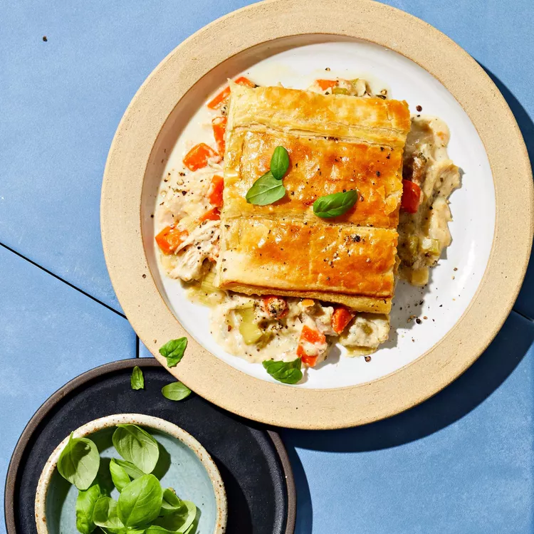

Puff Pastry Chicken and Leek Casserole

The star in this casserole is the leeks with their soft, sweet, and subtle flavor giving a wonderful base for the
chicken and spices. Using a box of puff pastry adds a wonderful, light crunch that will win your taste buds over.
- 1 pound boneless, skinless chicken thighs
- 1 large leek, sliced
- 2 medium carrots, chopped
- 2 stalks celery, chopped
- 1 cup peas
- 2 tablespoons chopped fresh parsley
- 1 tablespoon minced garlic
- 2 teaspoons minced shallot
- 2 teaspoons dried tarragon
- 1 U+00bd teaspoons kosher salt
- 1 teaspoon dried basil
- 1 teaspoon ground black pepper
- 2 large bay leaves
- 2 U+00bd cups milk
- 4 tablespoons salted butter
- 3 tablespoons all-purpose flour
- U+2154cup heavy whipping cream
- 1 U+00bd teaspoons Dijon mustard
- 1 (17.5 ounce) package frozen puff pastry, thawed
- 1 large egg, beaten
- Preheat the oven to 350 degrees F (175 degrees C). Grease a 9x13-inch baking dish.
- Place chicken thighs, leek, carrots, celery, peas, parsley, garlic, shallot, tarragon, salt, basil, pepper, and
bay leaves into a large pan. Pour in milk and stir to blend ingredients. Bring to a simmer. Cover and continue
to simmer for 15 minutes. Remove from the heat and allow to cool slightly. Strain off milk and set aside in a
bowl. Separate chicken and vegetables into two bowls. Tear chicken into rough chunks when cool enough to handle.
- Melt butter in the same pan over medium heat. Sprinkle in flour, stirring frequently and breaking up any chunks.
Continue to stir and cook until thickened and golden, making a roux. Gradually add the strained milk, stirring
until you have a sauce. Stir in heavy cream and Dijon mustard, then add the chicken and vegetables. Remove from
heat and let cool slightly, about 5 minutes.
- Pour chicken mixture into the prepared baking dish. Roll out the puff pastry and overlap the pieces to cover the
casserole. Glaze the pastry with beaten egg and make several vents in the pastry using a sharp knife.
- Bake in the preheated oven until golden, 30 to 40 minutes.